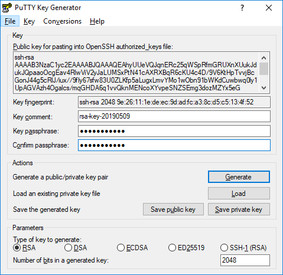
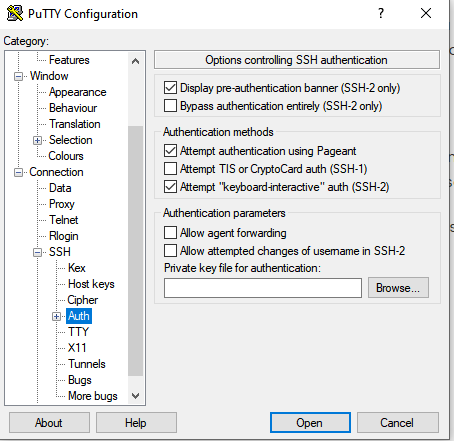

This last week I was unlucky enough to have my droplet compromised and used as part of a botnet in a DDOS attack on some poor soul. Because of this, I had to completely recreate my droplet and get my blog/site set back up. To help combat this happening again in the future I went ahead and set up SSH key authentication for my droplet and disabled password login all together. Let's take a look at how this is accomplished
Since I'm using Windows, I needed to use some sort of application for SSH as well as key generation and putty solves both of these problems. Generating the keys is easy enough, once you have putty installed you just run an executable called "puttygen" and it will generate public/private keys for you. Once those keys are generated, you set a passcode to be used in combination with your key for authentication. Once these keys have been generated your putty window will look something like this:
Once your keys have been generated you need to tell putty what file to look for to authenticate your connection with your private key. You do that in this location on putty:
After that, you need to make a directory for your authorized keys as well as give correct permissions and ownership to said keys in your droplet. You can accomplish that by running these commands and copying your public key in the authorized_keys file:
mkdir -p ~/.ssh
nano ~/.ssh/authorized_keys
chmod -R go= ~/.ssh
chown -R $USER:$USER ~/.ssh
Lastly, to make it so you can only log on using your ssh keys you need to disable password authentication which can be done by editing the file found at /etc/ssh/sshd_config with these lines:
# To disable tunneled clear text passwords, change to no here!
PasswordAuthentication no
PubkeyAuthentication yes
And there you have it! Hopefully this should help prevent something like this happening to my droplet again (fingers crossed)
Sources: https://www.digitalocean.com/docs/droplets/how-to/connect-with-ssh/putty/ https://www.digitalocean.com/docs/droplets/how-to/add-ssh-keys/to-existing-droplet/ https://askubuntu.com/questions/346857/how-do-i-force-ssh-to-only-allow-users-with-a-key-to-log-in